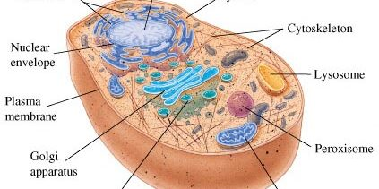

ชีววิทยา (Biology) คือ ศาสตร์แขนงหนึ่งของวิทยาศาสตร์ธรรมชาติ ที่ศึกษาเกี่ยวกับเรื่องต่างๆของสิ่งมีชีวิตชนิดต่างๆอย่างมีเหตุและผล ซึ่งศึกษาทั้งในเรื่อง ด้านโครงสร้าง ด้านการทำงาน ด้านการเจริญเติบโต ด้านวิวัฒนาการ ด้านถิ่นกำเนิด ด้านอนุกรมวิธาน ด้านการกระจายพันธุ์ และด้านอื่นๆอีกที่เกี่ยวข้องกับสิ่งมีชีวิต โดยจะใช้กระบวนการทางวิทยาศาสตร์ในการศึกษาค้นคว้าอย่างมีเหตุมีผลในทุกแง่ทุกมุมของสิ่งมีชีวิตโดยละเอียด ซึ่งจะพึ่งพาการใช้อุปกรณ์ เครื่องมือ และเทคโนโลยีทางวิทยาศาสตร์ศึกษาสิ่งมีชีวิตต่างๆคำว่า ชีววิทยา (Biology) เป็นคำที่มาจากภาษากรีก จากคำว่า “bios” ที่แปลว่า สิ่งมีชีวิต และ “logos” ที่แปลว่า วิชา หรือการศึกษาอย่างมีเหตุผลเนื่องจากแต่ละเรื่องในเนื้อหาของชีววิทยามีกระบวนการและขั้นตอนการศึกษาที่ค่อนข้างยุ่งยากและซับซ้อนมีหลายขั้นตอน ชีววิทยาจึงแตกแขนงเป็นสาขาวิชาต่างๆอีกมากมาย เพื่อจะได้เน้นศึกษาเฉพาะเรื่องของชีววิทยา ทำให้ศึกษาในเรื่องนั้นๆได้ละเอียดและลึกมากยิ่งขึ้น
